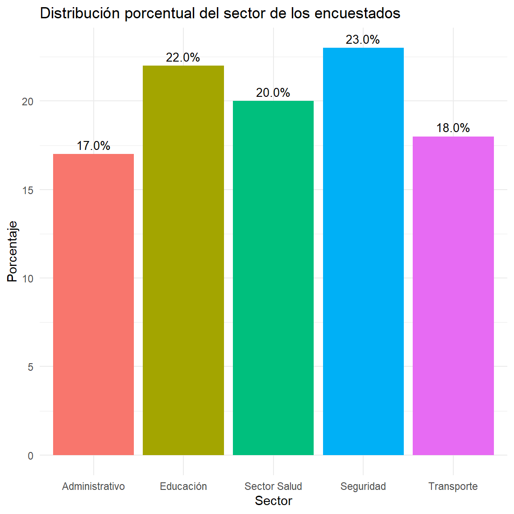
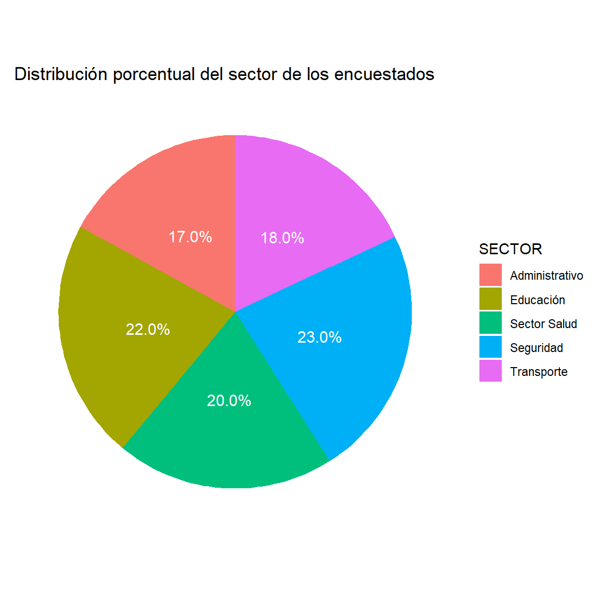
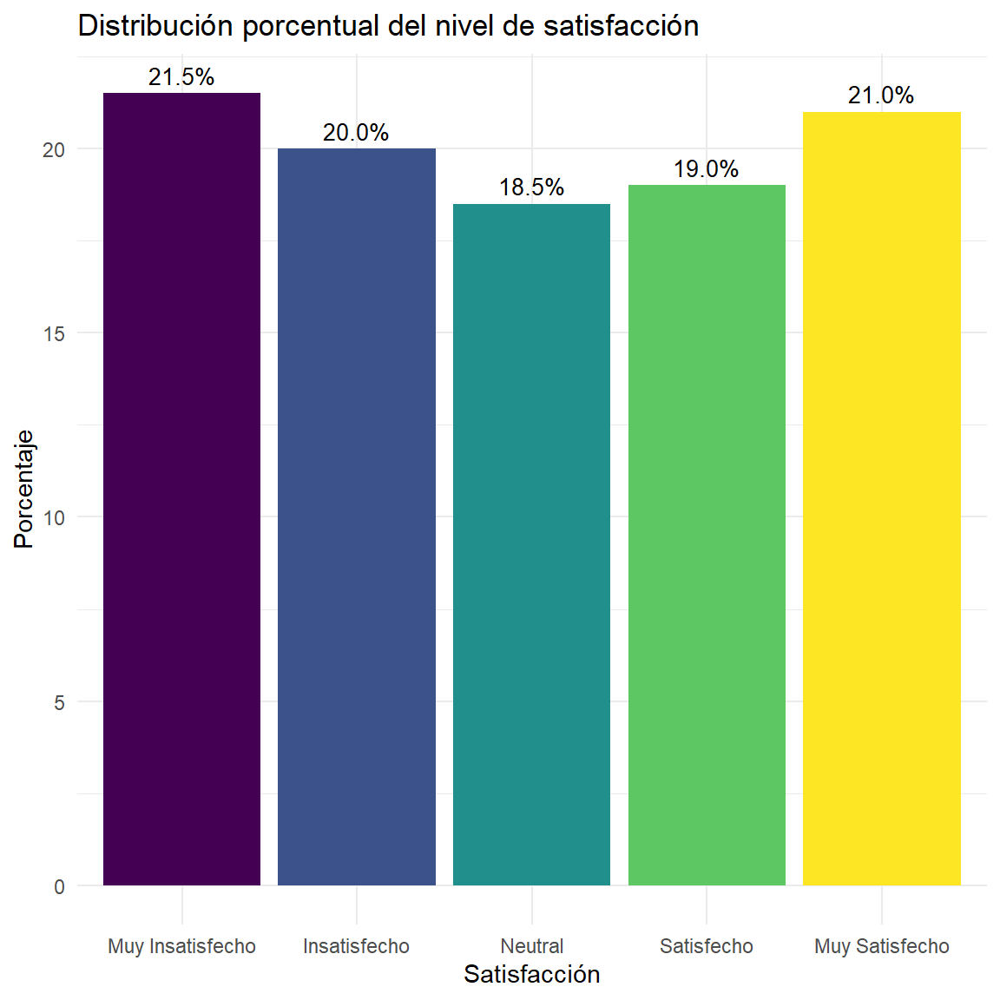
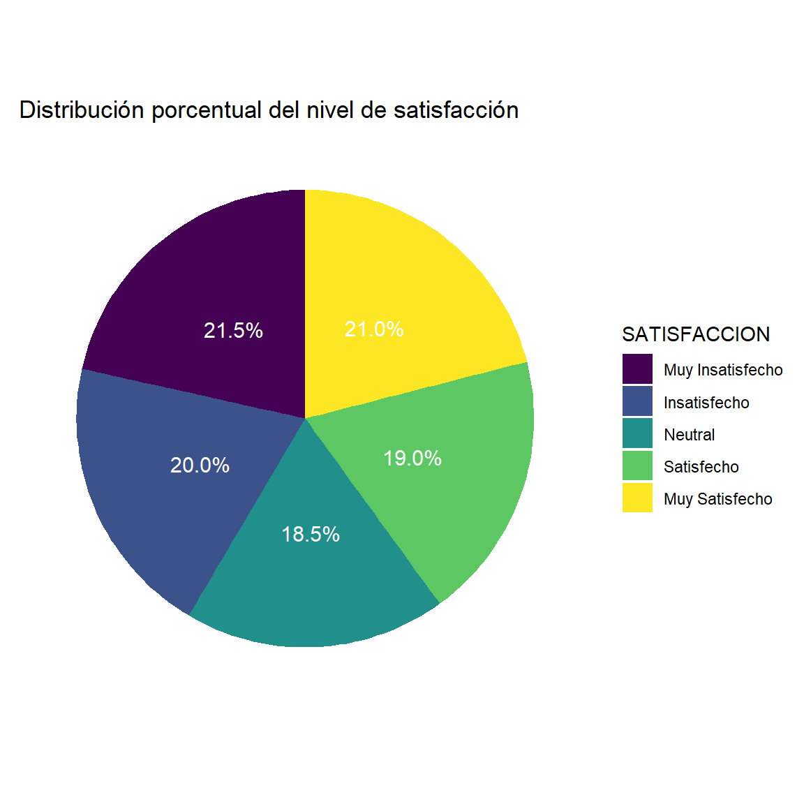

ipak <-function(pkg){# Definir repositorio CRAN (evita el error del mirror)options(repos =c(CRAN ="https://cloud.r-project.org"))# Identificar paquetes instalados installed <-rownames(installed.packages())# Identificar paquetes faltantes new.pkg <-setdiff(pkg, installed)# Instalar paquetes faltantesif(length(new.pkg) >0){install.packages(new.pkg, dependencies =TRUE) }# Cargar paquetes sin mostrar mensajesinvisible(lapply(pkg, function(p){suppressPackageStartupMessages(library(p, character.only =TRUE) ) }))}# Crear la lista de los paquetes a utilizarpackages <-c("tidyverse", "kableExtra", "readxl")# Instalar y cargar los paquetes del listado anterioripak(packages)
2 Introduccion
Tablas de frecuencias unidimensionales y tablas de contingencia
Enfoque estadístico y analítico
Las tablas de frecuencias son herramientas fundamentales de la estadística descriptiva porque permiten organizar, resumir e interpretar datos. Desde una perspectiva analítica, cumplen una función clave: transformar datos crudos en información estructurada, facilitando la identificación de patrones, tendencias y relaciones entre variables.
Tablas de frecuencias unidimensionales
Una tabla de frecuencias unidimensional resume la distribución de una sola variable XXX, ya sea cualitativa o cuantitativa.
Su objetivo es responder:
¿Qué valores toma la variable?
¿Con qué frecuencia aparecen?
¿Cómo se distribuyen proporcionalmente?
¿Cómo se acumulan los datos?
Definición
Sea una variable estadística XXX con kkk categorías o valores distintos:
# Crear la tabla originaltabla <-tibble(Sector = Sector$SECTOR) %>%group_by(Sector) %>%summarise(fi =n()) %>%mutate(hi =round(fi /sum(fi), 4),Porcentaje =paste0(round(hi *100, 2), "%") )# Convertir columna a charactertabla <- tabla %>%mutate(Sector =as.character(Sector) )# Añadir fila de totalestotales <-tibble(Sector ="Total",fi =sum(tabla$fi),hi =round(sum(tabla$hi), 4),Porcentaje =paste0(round(sum(tabla$hi) *100, 2), "%"))# Combinar tablastabla_final <-bind_rows(tabla, totales)# Mostrar tabla finaltabla_final %>% knitr::kable(col.names =c("Sector", "$f_i$", "$h_i$", "Porcentaje"),align =c("l", "c", "c", "c") )
Sector
f_i
h_i
Porcentaje
Administrativo
34
0.17
17%
Educación
44
0.22
22%
Sector Salud
40
0.20
20%
Seguridad
46
0.23
23%
Transporte
36
0.18
18%
Total
200
1.00
100%
Ver código
# Cargar las librerías necesariaslibrary(ggplot2)library(dplyr)library(readxl)# Calcular los porcentajes de cada categoría en la variable SECTORsector_counts <- Sector %>% dplyr::count(SECTOR) %>%mutate(porcentaje = n /sum(n) *100)# Crear el diagrama de barrasggplot(sector_counts, aes(x = SECTOR, y = porcentaje, fill = SECTOR)) +geom_bar(stat ="identity") +labs(title ="Distribución porcentual del sector de los encuestados",x ="Sector",y ="Porcentaje" ) +theme_minimal() +theme(legend.position ="none") +geom_text(aes(label =sprintf("%.1f%%", porcentaje)),vjust =-0.5,color ="black",size =3.5 )

Ver código
# Cargar las librerías necesariaslibrary(ggplot2)library(dplyr)library(readxl)# Calcular los porcentajes de cada categoría en la variable SECTORsector_counts <- Sector %>% dplyr::count(SECTOR) %>%mutate(porcentaje = n /sum(n) *100)# Crear el diagrama circularggplot(sector_counts, aes(x ="", y = porcentaje, fill = SECTOR)) +geom_bar(stat ="identity", width =1) +coord_polar("y") +labs(title ="Distribución porcentual del sector de los encuestados" ) +theme_minimal() +theme(axis.title.x =element_blank(),axis.title.y =element_blank(),panel.grid =element_blank(),axis.text.x =element_blank() ) +geom_text(aes(label =sprintf("%.1f%%", porcentaje)),position =position_stack(vjust =0.5),color ="white",size =4 )

La distribución de frecuencias correspondiente al sector laboral de 200 trabajadores de la función pública de la ciudad de Ibagué evidencia una participación relativamente equilibrada entre las diferentes áreas institucionales, aunque con una ligera concentración en los sectores de Seguridad y Educación. El sector Seguridad presenta la mayor frecuencia absoluta con 46 trabajadores (23%), seguido por Educación con 44 funcionarios (22%) y Sector Salud con 40 trabajadores (20%). Por su parte, Transporte representa el 18% y el área Administrativa el 17% de la población analizada. Desde una perspectiva estadística, estos resultados indican una distribución organizacional moderadamente homogénea, sin diferencias extremas entre categorías, lo que sugiere una estructura laboral diversificada en la administración pública estudiada. Asimismo, la cercanía porcentual entre sectores refleja una asignación relativamente balanceada del talento humano, aunque con mayor concentración funcional en áreas estratégicas relacionadas con seguridad ciudadana, educación y servicios de salud.
5.2 Variable Ordinal
Nivel de satisfaccion de los trabajadores encuestados
# Crear la tabla originaltabla <-tibble(Satisfaccion = Sector$SATISFACCION) %>%group_by(Satisfaccion) %>%summarise(fi =n()) %>%mutate(hi =round(fi /sum(fi), 4),Porcentaje =paste0(round(hi *100, 2), "%") )# Convertir las columnas a charactertabla <- tabla %>%mutate(Satisfaccion =as.character(Satisfaccion) )# Añadir la fila de totalestotales <-tibble(Satisfaccion ="Total",fi =sum(tabla$fi),hi =round(sum(tabla$hi), 4),Porcentaje =paste0(round(sum(tabla$hi) *100, 2), "%"))# Combinar tablastabla_final <-bind_rows(tabla, totales)# Mostrar la tabla finaltabla_final %>% knitr::kable(col.names =c("Satisfacción", "$f_i$", "$h_i$", "Porcentaje"),align =c("l", "c", "c", "c") )
Satisfacción
f_i
h_i
Porcentaje
Muy Insatisfecho
43
0.215
21.5%
Insatisfecho
40
0.200
20%
Neutral
37
0.185
18.5%
Satisfecho
38
0.190
19%
Muy Satisfecho
42
0.210
21%
Total
200
1.000
100%
Ver código
# Cargar las librerías necesariaslibrary(ggplot2)library(dplyr)library(readxl)# Calcular los porcentajes de cada categoría en la variable SATISFACCIONsatisfaccion_counts <- Sector %>% dplyr::count(SATISFACCION) %>%mutate(porcentaje = n /sum(n) *100)# Crear el diagrama de barrasggplot(satisfaccion_counts, aes(x = SATISFACCION, y = porcentaje, fill = SATISFACCION)) +geom_bar(stat ="identity") +labs(title ="Distribución porcentual del nivel de satisfacción",x ="Satisfacción",y ="Porcentaje" ) +theme_minimal() +theme(legend.position ="none") +geom_text(aes(label =sprintf("%.1f%%", porcentaje)),vjust =-0.5,color ="black",size =3.5 )

Ver código
# Cargar las librerías necesariaslibrary(ggplot2)library(dplyr)library(readxl)# Calcular los porcentajes de cada categoría en la variable SATISFACCIONsatisfaccion_counts <- Sector %>% dplyr::count(SATISFACCION) %>%mutate(porcentaje = n /sum(n) *100)# Crear el diagrama circularggplot(satisfaccion_counts, aes(x ="", y = porcentaje, fill = SATISFACCION)) +geom_bar(stat ="identity", width =1) +coord_polar("y") +labs(title ="Distribución porcentual del nivel de satisfacción" ) +theme_minimal() +theme(axis.title.x =element_blank(),axis.title.y =element_blank(),panel.grid =element_blank(),axis.text.x =element_blank() ) +geom_text(aes(label =sprintf("%.1f%%", porcentaje)),position =position_stack(vjust =0.5),color ="white",size =4 )

La distribución de frecuencias correspondiente al nivel de satisfacción de 200 trabajadores de la función pública de la ciudad de Ibagué evidencia una percepción laboral relativamente heterogénea y equilibrada entre categorías positivas y negativas. Los niveles de “Muy Insatisfecho” (21.5%) y “Muy Satisfecho” (21%) presentan las mayores proporciones dentro de la muestra, seguidos de las categorías “Insatisfecho” (20%), “Satisfecho” (19%) y “Neutral” (18.5%). Desde una perspectiva estadística, los resultados muestran una distribución casi uniforme de las respuestas, sin una concentración dominante en una única categoría de satisfacción. Analíticamente, esto sugiere la coexistencia de percepciones laborales divergentes dentro de la administración pública, evidenciando tanto grupos con altos niveles de conformidad institucional como sectores con percepciones negativas frente a sus condiciones laborales. La reducida diferencia porcentual entre categorías indica una variabilidad moderada en la percepción de satisfacción, aspecto relevante para estudios sobre clima organizacional, bienestar laboral y gestión del talento humano en entidades públicas.
La tabla de contingencia organiza las frecuencias conjuntas fijf_{ij}fij, donde cada celda representa el número de observaciones que pertenecen simultáneamente a la categoría iii de XXX y a la categoría jjj de YYY.
fijf_{ij}fij
Tipos de frecuencias en tablas de contingencia
Frecuencia absoluta conjunta(fij)(f_{ij})(fij)
Es el número de observaciones que pertenecen simultáneamente a la categoría iii de XXX y jjj de YYY.
fijf_{ij}fij
Interpretación:
Mide la ocurrencia conjunta de dos eventos o categorías.
Frecuencia relativa conjunta(hij)(h_{ij})(hij)
Es la proporción conjunta respecto al total.
hij=fijNh_{ij} = \frac{f_{ij}}{N}hij=Nfij
Interpretación:
Representa la probabilidad empírica conjunta.
Frecuencia marginal de filas(fi⋅)(f_{i\cdot})(fi⋅
proporción de la categoría iii de XXX dentro de la categoría jjj de YYY.
Estas son esenciales para estudiar asociación o dependencia entre variables.
Estructura general de una tabla de contingencia
X\YX \backslash YX\\Y
y1y_1y1
y2y_2y2
⋯⋯
ycy_cyc
Total
x1x_1x1
f11f_{11}f11
f12f_{12}f12
⋯⋯
f1cf_{1c}f1c
f1⋅f_{1\cdot}f1⋅
x2x_2x2
$ f21f_{21}f21$
$f22f_{22}f22 $
⋯⋯
f2cf_{2c}f2c
f2⋅f_{2\cdot}f2⋅
⋮⋮
⋮⋮
⋮⋮
⋱⋱
⋮⋮
⋮⋮
xrx_rxr
fr1f_{r1}fr1
fr2f_{r2}fr2
⋯⋯
frcf_{rc}frc
fr⋅f_{r\cdot}fr⋅
Total
f⋅1f_{\cdot1}f⋅1
f⋅2f_{\cdot2}f⋅2
⋯⋯
f⋅cf_{\cdot c}f⋅c
$ NNN$
Interpretación analítica de tablas de contingencia
Una tabla de contingencia permite:
estudiar asociación entre variables;
identificar patrones conjuntos;
comparar perfiles entre grupos;
calcular probabilidades conjuntas, marginales y condicionales;
evaluar independencia estadística.
Es la base para pruebas como:
Chi-cuadrado de independencia
V de Cramer
Coeficiente de contingencia
Diferencia conceptual clave
Tabla unidimensional: describe una sola variable.
Tabla de contingencia: analiza simultáneamente dos variables y su posible relación.
La primera resume, y la segunda compara y relaciona.
Conclusión técnica
Desde la estadística descriptiva, las tablas de frecuencias constituyen el primer nivel de modelación de datos.
Las tablas unidimensionales permiten describir la estructura interna de una variable.
Las tablas de contingencia permiten estudiar relaciones entre variables y constituyen la base del análisis bivariado.
En análisis de datos, ambas son esenciales porque convierten observaciones dispersas en estructuras interpretables, comparables y analíticamente útiles. Su valor no está solo en ordenar datos, sino en revelar comportamiento estadístico.